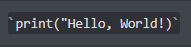
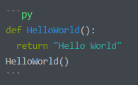
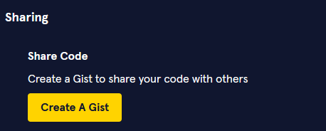

A (non-exhaustive) list of some of the preferred ways to share code.
If sharing a single line of code, wrap it in a pair of backticks (`):
For a larger chunk of code, wrap it in three backticks (`) with the name of the language:
This has a number of benefits such as improved readability and syntax highlighting.
If you need to send a larger code snippet or a whole file, please avoid uploading it directly as a file and instead use one of these options:
If you need to export code directly from the Codecademy workspace, you can click on the Tools header on the navbar and export your code to a gist:
To share off platform code you can use a code-sharing site. Some of these are:
GitHub Gist Codepen JSFiddleOr you could share a link to a GitHub repository with your code.